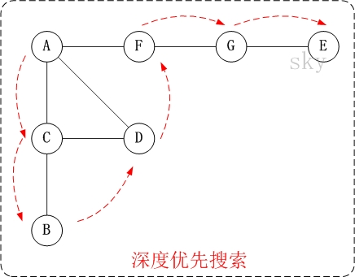
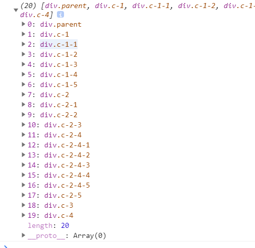
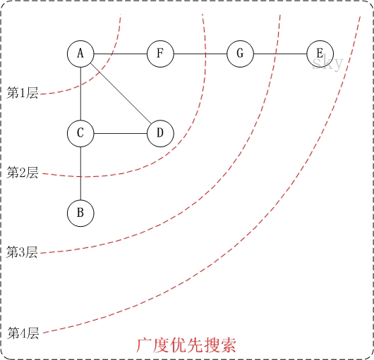
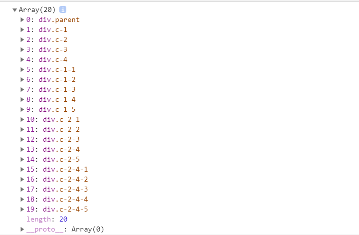

深度优先遍历（Depth-First-Search），是搜索算法的一种，它沿着树的深度遍历树的节点，尽可能深地搜索树的分支。当节点v的所有边都已被探寻过，将回溯到发现节点v的那条边的起始节点。这一过程一直进行到已探寻源节点到其他所有节点为止，如果还有未被发现的节点，则选择其中一个未被发现的节点为源节点并重复以上操作，直到所有节点都被探寻完成。
简单的说，DFS就是从图中的一个节点开始追溯，直到最后一个节点，然后回溯，继续追溯下一条路径，直到到达所有的节点，如此往复，直到没有路径为止。

DFS和BFS一般是用来解决图的遍历的，但是在这里，既然是前端，我是用DFS和BFS来遍历DOM树。
下面采用栈的形式或者递归的形式实现：
DOM节点
<div class="parent">
<div class="c-1">
<div class="c-1-1">
</div>
<div class="c-1-2">
</div>
<div class="c-1-3">
</div>
<div class="c-1-4">
</div>
<div class="c-1-5">
</div>
</div>
<div class="c-2">
<div class="c-2-1">
</div>
<div class="c-2-2">
</div>
<div class="c-2-3">
</div>
<div class="c-2-4">
<div class="c-2-4-1">
</div>
<div class="c-2-4-2">
</div>
<div class="c-2-4-3">
</div>
<div class="c-2-4-4">
</div>
<div class="c-2-4-5">
</div>
</div>
<div class="c-2-5">
</div>
</div>
<div class="c-3">
</div>
<div class="c-4">
</div>
</div>var node = document.querySelectorAll('.parent')[0];
//递归写法
function DFS1 (node, nodeList = []){
if (node != null){
nodeList.push(node);
let children = node.children
for(let i = 0; i < children.length; i++){
DFS1(children[i], nodeList)
}
}
return nodeList
}
let nodeList = DFS1(node);
console.log(nodeList);
//栈写法
function DFS2(node){
let nodeList = [];
if (node){
//栈 后进先出
let stack = [];
stack.push(node);
while (stack.length) {
let _node = stack.pop();
nodeList.push(_node);
let children = _node.children;
//这样写是从右向左
// for (let i = 0; i < children.length; i++) {
// stack.push(children[i]);
// }
//从左向右
for (let i = children.length-1; i >= 0; i--) {
stack.push(children[i]);
}
}
}
return nodeList;
}
let nodeList2 = DFS2(node);
console.log(nodeList2);运行结果，上面DFS1和DFS2的结果是一样的

广度优先遍历（Breadth-First-Search）是从根节点开始，沿着图的宽度遍历节点，如果所有节点均被访问过，则算法终止，BFS 同样属于盲目搜索，一般用队列数据结构来辅助实现BFS。

还是采用上面的DOM节点。BFS的写法如下。
代码采用队列的形式实现。
var node = document.querySelectorAll('.parent')[0];
function BFS1(node, nodeList = []) {
if (!node){
return;
}
//队列 先进先出
var sequeue = [];
sequeue.push(node);
while (sequeue.length){
var _node = sequeue.shift();
nodeList.push(_node)
for(var i = 0; i < _node.children.length; i++){
sequeue.push(_node.children[i])
}
}
return nodeList
}
let nodeList = BFS1(node);
console.log(nodeList);结果如下

下面采用两种方式来实现对象深度克隆的实现。
深度克隆要注意两个问题
1、环状数据问题：如果一个对象具有环状对象，比如obj.a.b.c === obj.a，就会使递归进入死循环，从而导致爆栈错误。
2、边界处理： 对象中不止原始类型，还存在如函数、Set等数据类型，我们需要一一做处理。下面代码只是解决了对函数的复制。
let _toString = Object.prototype.toString;
let map = {
array: 'Array',
object: 'Object',
function: 'Function',
string: 'String',
null: 'Null',
undefined: 'Undefined',
boolean: 'Boolean',
number: 'Number'
}
function getType(obj){
return _toString.call(obj).slice(8, -1)
}
function isTypeOf(obj, type){
return map[type] && map[type] === getType(obj)
}
//深度克隆
//深度优先遍历
/**
*
* 解决三个问题 递归问题 环状数据问题 边界处理（比如函数，Set等）
*/
const DFSdeepClone = function (obj, visitedArr = []){
let _obj = {};
if (isTypeOf(obj, 'array') || isTypeOf(obj, 'object')){
let index = visitedArr.indexOf(obj);
if (index > -1){
_obj = visitedArr[index]
}
else{
visitedArr.push(obj)
for (let key in obj){
_obj[key] = DFSdeepClone(obj[key], visitedArr)
}
}
}
else if(isTypeOf(obj, 'function')){
_obj = eval( '(' + obj.toString() + ')')//处理函数
}
else{
_obj = obj;//处理原始值
}
return _obj;
}
let testObj = {
a: 1,
b: {
c: 1,
d: 2
},
circle: null,
e: function() {
console.log(1);
}
}
let cloneTestObj = DFSdeepClone(testObj);
let cloneTestObj2 = testObj;
console.log(cloneTestObj);
console.log('经过深度克隆后的更改');
cloneTestObj.b = {};//经过深度克隆后的更改
console.log(cloneTestObj);
console.log(testObj);
cloneTestObj2.b = {}; //引用的更改
console.log('引用的更改');
console.log(cloneTestObj2);
console.log(testObj);
//环状数据
let testCircle = {
a: 1,
b: {
c: 1,
d: 2,
circle: null,
},
e: function() {
console.log(1);
}
}
testCircle.b.circle = testCircle.b;
cloneTestCircle = DFSdeepClone(testCircle);//不处理环问题是会爆栈的 进入死循环
console.log(cloneTestCircle);let _toString = Object.prototype.toString;
let map = {
array: 'Array',
object: 'Object',
function: 'Function',
string: 'String',
null: 'Null',
undefined: 'Undefined',
boolean: 'Boolean',
number: 'Number'
}
function getType(obj){
return _toString.call(obj).slice(8, -1)
}
function isTypeOf(obj, type){
return map[type] && map[type] === getType(obj)
}
//广度优先深度克隆， 利用队列的方式实现
//利用copyObj建立一个与原对象相同的数据结构， 遇到可处理的值（比如原始值，函数，就处理后赋值到相应的节点下）
const BFSdeepClone = function (obj, visitedArr = []){
let copyObj = {};
let sequeue = [obj];//进队列
//同时copyObj也跟着一起进队列
let copySequeue = [copyObj];
while(sequeue.length){
let _obj = sequeue.shift();
let _copyObj = copySequeue.shift();
if (isTypeOf(_obj, 'array') || isTypeOf(_obj, 'object')){
for(item in _obj){
let val = _obj[item];
if (isTypeOf(val, 'object')){
let index = visitedArr.indexOf(val)
if (~index){
//是环形数据
_copyObj[item] = visitedArr[index];
}
else{
//新的对象，给copyObj一个对应属性的空对象
sequeue.push(val);
_copyObj[item] = {};
copySequeue.push(_copyObj[item]);
visitedArr.push(val);
}
}
else if (isTypeOf(val, 'array')){
sequeue.push(val);
_copyObj[item] = [];
copySequeue.push(_copyObj[item])
}
else if(isTypeOf(val, 'function')){
_copyObj[item] = eval( '(' + val.toString() + ')');//处理函数
}
else{
_copyObj[item] = val;//处理原始值
}
}
}
else if(isTypeOf(obj, 'function')){
_copyObj = eval( '(' + _obj.toString() + ')');//处理函数
}
else{
_copyObj = _obj;//处理原始值
}
}
return copyObj
}
let testObj = {
a: 1,
b: {
c: 1,
d: 2
},
circle: null,
e: function() {
console.log(1);
}
}
let cloneTestObj = BFSdeepClone(testObj);
let cloneTestObj2 = testObj;
console.log(cloneTestObj);
//环状数据
let testCircle = {
a: 1,
b: {
c: 1,
d: 2,
circle: null,
},
e: function () {
console.log(1);
}
}
testCircle.b.circle = testCircle.b;
cloneTestCircle = BFSdeepClone(testCircle);//不处理环问题是会爆栈的 进入死循环
console.log(cloneTestCircle);
/**
* 打印如下
{ a: 1, b: { c: 1, d: 2 }, circle: null, e: [Function] }
{
a: 1,
b: { c: 1, d: 2, circle: { c: 1, d: 2, circle: [Circular] } },
e: [Function]
}
*/